Регламент МП: от поиска товара до поступления на склад
Единая последовательная инструкция для сотрудников маркетплейсов. Объединяет SellerStats, KeyCollector, Датагон (расширение у действующих) и витрину МП. Финиш процесса — товар оприходован на складе.
1. Зачем эта инструкция
Раньше сотрудники описывали каждый свой кусок: кто-то SellerStats, кто-то KeyCollector, кто-то Датагон, кто-то витрину. Получались обрывы (до таблицы / до оплаты) и разные правила (когда запрашивать РУ, какая таблица, где заканчивается работа менеджера).
2. Схема процесса (A→Z)
- Старт: задача → проверка дубля в реестре → выбор входа A / B / C / D
- Вход: SellerStats или KeyCollector или Датагон (действующие) или витрина МП
- Поставщик: приоритет канала + чек-лист условий + запрос РУ
- Отбор: стоп-факторы + слои спроса L1/L2/L3 + экономика
- Таблица новинок: статус «На согласовании»
- Гейт руководителя: утверждено / отклонено / частично
- Исполнение: счёт (+ договор при новом поставщике) → сайт Альмамед → Мой Склад → карточки МП → «Готово к оплате»
- Финал: оплата → отгрузка → приёмка → «На складе»
Ветвления только на выборе входа и при эскалациях. После утверждения путь для всех входов одинаковый.
3. Роли
| Роль | Зона |
|---|---|
| МП — менеджер МП | Сквозной владелец строки: вход, поставщик, таблица, координация хвоста, закрытие после приёмки |
| РУК — руководитель | Гейт ввода в ассортимент; новый поставщик; спорные случаи; правило цен; выгрузка с сайта |
| ЮР — проверка договора | Проверка договора поставки (задача на Юлию) до оплаты по новому / изменённому договору |
| КОН — контент | Артикулы (если нет), сайт Альмамед, карточки МП; приём позиций из таблицы контента |
| СКЛ — склад | Приёмка, акты расхождений, оприходование |
| БУХ — бухгалтерия | Оплата счёта, платёжное поручение |
Эскалация к руководителю обязательна, если
- новый поставщик (нет истории закупок);
- запрет продаж на МП при сильном спросе;
- проблемы с РУ (нет / не бьётся с моделью / просрочено);
- маржа ниже утверждённого порога;
- дубль: позицию уже ведёт коллега;
- срыв поставки после оплаты.
4. Как выбрать вход
| Ситуация | Вход |
|---|---|
| Плановый поиск хитов / новых брендов по цифрам МП | A (SellerStats); при необходимости усилить D |
| Поиск новинок по частотности запросов / справочнику мед. товаров | B (KeyCollector) |
| Расширить ассортимент у уже нашего поставщика | C (Датагон → Анализ поставщиков) |
| Дали ссылку на карточку МП / проверить полку глазами | D (витрина) |
| Нашли бренд в аналитике — сверить полку | A → D |
| Товар новый, поставщика ещё нет | A или B, затем поставщик |
5. Вход A — SellerStats
Когда: нужны цифры продаж/выручки, плановый поиск новинок.
Не когда: расширение у действующего (сначала C); точечная ссылка на карточку (сначала D); работа по частотности справочника (тогда B).
- Раздел «Аналитика WB + Ozon + ЯМ».
- Категория / подкатегория по смыслу задачи (аптека и целевые ветки).
- Сортировка по продажам или выручке за 90 и 30 дней (7 дней — только тренд).
- Отобрать кандидатов в «Свой список» (буфер).
- Зафиксировать бренд, ссылки, продажи/выручку, цену.
- Проверить дубль (сайт / Мой Склад / реестр новинок).
- Перейти к блоку «Поставщик».
Скриншоты UI и видео — в приложении B.
6. Вход B — KeyCollector
Когда: поиск новинок через справочник медицинских товаров и частотность запросов; нужны кандидаты, которых ещё нет у нас.
Не когда: расширение у действующего поставщика (сначала C); уже есть свежие цифры SellerStats по конкретной нише и задача — только «добить полку» (A/D).
Доступ
- Справочник лежит на удалённом рабочем столе. Доступ выдаёт Станислав.
- Папка «Справочник медицинских товаров» → подпапки по датам → открыть папку с самой поздней датой → запустить приложение KeyCollector.
Категория и товар
- Справа: «Управление группами» → выбрать категорию для проработки (пример: «Анестезиология»).
- В таблице фраз найти интересующий товар / запрос; при необходимости — поиск по фразе вверху.
- Открыть доп. вкладку / карточку по фразе → проверить товар на маркетплейсах (продажи, отзывы, цены).
Три подгруппы (обязательная структура)
| Подгруппа | Смысл |
|---|---|
| Товары не подходят | Отказ / не наш ассортимент / стоп-фактор |
| Товары в работе (+ оптимизация / проверяются поставщики) | Активный пайплайн: ищем/проверяем поставщика |
| Товары уже в продаже | Уже есть у нас или уже вывели — не дублировать |
Резерв категории (антидубль между сотрудниками)
- Скопировать шаблон трёх подгрупп.
- Создать персональную папку (своё имя) и перенести туда копии подгрупп.
- Работать только в своей папке — иначе двое одновременно прорабатывают одну категорию.
Обработка и мультигруппа
- Кандидата для проработки → в «Товары в работе».
- Сортировка по частотности (база / точные формы) — приоритет востребованным запросам.
- Нужна фраза не только в текущей группе: выделить нужные группы/категории → режим «Мультигруппа» → просмотреть выдачу → разнести по своим трём подгруппам.
Поставщик и реестр
- По названию товара / бренду — поиск официального канала в браузере. В отзывах на МП иногда есть фото/производитель — использовать как подсказку, не как «продавец = поставщик».
- Связаться: прайс + РУ + условия МП (см. блок «Поставщик»).
- Внести в единый реестр новинок (не в личную Google-таблицу) → дальше общий хвост: отбор → гейт → исполнение.
Скриншоты UI и видео — в приложении D. Шаги «счёт + договор → Юлия → контент» — в блоке «После согласования» (этап 6).
7. Вход C — Датагон (действующие поставщики)
Когда: нужно расширить матрицу у поставщика, который уже в работе (история закупок / Мой Склад).
Не когда: поставщика ещё нет (тогда A/B); на нужные SKU запрет МП — эскалация РУК.
Сервис: https://p.datagon.ru/supplier-analysis.html — пункт меню «Анализ поставщиков». Доступ выдаёт Станислав.
Где смотреть
- Открыть панель Датагон → Анализ поставщиков.
- Блок «Топ по выручке» — поставщики со стабильным спросом (приоритет для расширения).
- Общий список / таблица — полный перечень; в конце часто оказываются относительно новые поставщики с нулевыми продажами.
Колонки для решения «расширяем / нет»
| Колонка | Зачем |
|---|---|
| Продажи ₽ | Выручка по поставщику за период — главный сигнал спроса |
| Продажи за период (шт.) | Объём в штуках — дополняет выручку |
| Оборачиваемость / мес. (%) | Насколько «крутится» остаток; низкая оборачиваемость + большой остаток — осторожнее с расширением |
Дополнительно полезно смотреть: остаток на сумму, «залежалые», «новые на складе» — чтобы не раздувать склад без спроса.
Действия после выбора поставщика
- Связаться с партнёром → актуальный прайс + РУ + можно ли продавать на МП (в т.ч. новые SKU).
- Отобрать позиции, которые ранее не закупались.
- Проверить спрос (Wordstat + полка МП; желательно SellerStats) — блок «Отбор».
- Внести в единый реестр новинок (вход = C).
- Сообщить руководителю о предложении расширения у действующего поставщика (не ждать «молча» только статуса в таблице).
Скриншоты UI — в приложении E. Видео из исходного docx пока без стабильной ссылки (drive/home) — уточнить у Станислава.
8. Вход D — Витрина маркетплейса
Когда: конкретная карточка; проверка полки глазами покупателя; нет доступа к SellerStats / KeyCollector.
Не когда: единственный метод массового «что продавать» без цифр; расширение у своего поставщика (сначала C).
- Каталог → категория → подкатегория (пример: Ozon → Аптека).
- Отобрать товары, которых нет в ассортименте компании.
- По карточке зафиксировать: рейтинг, отзывы, число продавцов, мин/макс цену, ссылку.
- Усилить оценку спросом (Wordstat; при возможности SellerStats) — см. блок «Отбор».
- Перейти к поиску официального поставщика.
9. Поставщик — чек-лист
Обязателен после A / B / D. На входе C шаг «найти юрлицо» пропускается — сразу чек-лист условий и РУ у действующего.
Приоритет канала
- Действующий (уже в Мой Склад / история закупок / Датагон).
- Официальный: производитель → дистрибьютор / импортёр.
- Иначе — эскалация руководителю.
Первый контакт — запросить
- Прайс или КП по целевым SKU
- Можно ли продавать на Ozon / Wildberries / другие МП и какие ограничения
- Регистрационное удостоверение (если товар подлежит) — статус: получено / запрошено / не требуется
Обязательный минимум до статуса «На согласовании»
| Блок | Что зафиксировать |
|---|---|
| Контрагент | Название, роль (производитель/дистрибьютор), контакты, «уже наш?» (да на входе C) |
| Коммерция | Цены, MOQ / мин. сумма, срок поставки, оплата, упаковка |
| МП | Разрешено / запрещено / ограничения (РРЦ, квоты) |
| Регуляторика | РУ (файл или статус запроса), Честный знак — да/нет |
| Качество | Срок годности при отгрузке, брак/возврат, гарантия, комплектация |
| Логистика | Доставка до нашего склада, кто платит |
Молчание поставщика более 3 рабочих дней — сменить статус («нет ответа»), повторить запрос или искать другой канал. Не держать вечно в «ожидании».
После утверждения руководителем
- Счёт только на утверждённые позиции
- Актуальные РУ на эти модели
- Подтверждение комплектации
- Сверка: счёт ↔ РУ ↔ строка таблицы (расхождение = стоп)
- Новый / изменённый договор → проверка ЮР (см. блок 13.1)
10. Отбор товара — чек-лист
Стоп-факторы (не в «На согласовании»)
- Уже есть у нас (сайт / Мой Склад) — тот же бренд и модель.
- Уже в реестре новинок у коллеги («на согласовании» / «в работе»).
- В KeyCollector позиция в «Товары уже в продаже» (или аналог у коллеги) — сначала сверить дубль, не тащить повторно.
- Письменный запрет МП (без эскалации РУК).
- Нужно РУ, а его нет и не запрошено.
- Неясны модель / фасовка / бренд.
Три слоя спроса (вместе)
| Слой | Источник | Что смотреть |
|---|---|---|
| L1 | SellerStats | Продажи/выручка за 90 и 30 дней |
| L2 | Яндекс.Вордстат · частотность KeyCollector | Частотность по модели / запросу (на входе B — из KC) |
| L3 | Карточка МП | Рейтинг (ориентир ≥ 4.5), отзывы, число продавцов, мин–макс цена |
Для «На согласовании» минимум: L2 + L3. L1 обязателен на входе A; на B/C/D — желателен (если нет — пометка «L1 н/д, риск выше»). На входе C дополнительно смотрите метрики поставщика в Датагоне (продажи / оборачиваемость) — это не замена L1 по SKU, а контекст «можно ли расширять у этого партнёра».
Экономика
- Закупочная цена известна
- Понятен коридор цен на МП
- Понятен порядок MOQ / суммы первой закупки
- Черновая маржа не ниже порога руководителя (см. прил. C)
Итог по кандидату
| Статус | Когда |
|---|---|
| На согласование | Нет стоп-факторов, слои и условия собраны |
| Черновик | Ждём прайс / РУ / ответ, товар перспективен |
| Отказ | Стоп-фактор или слабые все слои |
| Эскалация | Сильный спрос, но блок по РУ / МП / марже / новому поставщику |
В комментарии к строке: почему берём (1–2 сигнала) · главный риск · вход A/B/C/D.
11. Единая таблица новинок
Один реестр на всех. Одна строка = один SKU (бренд + модель + фасовка). Сюда сходятся все входы A/B/C/D.
Статусы строки
Черновик → На согласовании → Утверждено / Отклонено → В работе → … → На складе (или Отмена). Полная сводка — блок 15.
Обязательные поля для «На согласовании»
| Блок | Поля |
|---|---|
| Служебные | Дата, менеджер-владелец, статус, вход A/B/C/D |
| Товар | Наименование, бренд, фасовка, ссылка на Ozon/WB/ЯМ (если есть) |
| Спрос | Wordstat и/или частотность KC; SS 90/30 (или «н/д»); мин/макс цена МП; «почему берём» |
| Поставщик | Название, тип (действующий/новый), ссылка на прайс + дата, закупка, MOQ, МП разрешены?, статус РУ, комментарий по условиям |
После утверждения в той же строке (или на листе «Контент» / «Исполнение») ведутся: счёт, договор (если нужен), артикул, цены сайта и МП, штрихкод, даты оплаты / отгрузки / приёмки.
Чек перед отправкой на гейт
- Вход указан (A/B/C/D)
- Нет стоп-факторов
- Минимум L2+L3 (и L1 на A)
- Поставщик: прайс/РУ/МП заполнены или явно «запрошено»
- На входе C — руководитель уведомлён о расширении
12. Гейт руководителя
Одинаков для всех входов. Руководитель не разбирает «как нашли» глубже поля «вход» — смотрит готовность строки.
- Утверждено — статус «В работе», дальше блок 13 только по утверждённым SKU.
- Отклонено — причина в реестре, конец или доработка и повторный заход.
- Частично — в работу только отмеченные позиции.
13. После согласования (до «Готово к оплате»)
Статус строки: В работе. Порядок строгий — без прыжков. Одинаков для всех входов A/B/C/D.
13.1. Счёт, договор, проверка ЮР
- Запросить у поставщика счёт только на утверждённые SKU и при необходимости договор поставки (новый поставщик / новый договор / существенные изменения условий).
- Сверка: счёт ↔ РУ ↔ строка реестра (расхождение = стоп).
- Если нужен договор: создать задачу Юлии (ЮР) — «проверить договор»; к задаче приложить файл договора (и счёт при наличии).
- Параллельно внести позиции в таблицу для контент-отдела (не вместо единого реестра — как передача в КОН).
- Оплата и подписание договора — только после: положительного заключения ЮР (если договор был) и подтверждения заводки позиций в Мой Склад (см. ниже).
13.2. Сайт → Мой Склад → карточки МП
- Лист / поля для контента (МП): цена для сайта Альмамед (по правилу РУК), РУ, артикул (из счёта / с сайта / «присвоить контенту»).
- Сайт Альмамед (контент) — позиция размещена, артикул записан.
- Выгрузка с сайта (запрос МП → выдаёт РУК) → карточка в Мой Склад (поля — прил. A).
- Штрихкод + итоговая цена МП (МП) — без этого контент не стартует карточки МП.
- Карточки на МП (контент) → короткая приёмка МП-менеджером.
- Отметка «Готово к оплате» (МП) — карточки готовы, счёт актуален, МС завёден; договор (если был) проверен ЮР.
14. Оплата → отгрузка → приёмка на склад
14.1. Передача на оплату и подпись
- МП передаёт пакет: счёт, ID строк реестра, отметка «карточки готовы» / МС завёден, при необходимости ОК РУК и ссылка на проверенный договор.
- В Planfix (или принятом канале): явная просьба внести счёт в ТБ и подписать договор (если договор в пакете); указать, что счёт уже в МС.
- Бухгалтерия оплачивает; ПП / подтверждение уходит поставщику; дата оплаты — в реестре.
- Запросить / зафиксировать подписание договора (когда требуется).
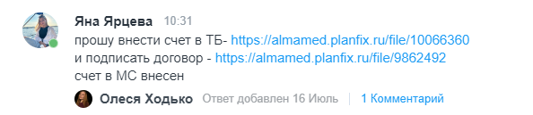
14.2. Отгрузка и приёмка
- Отгрузка: ETA, состав = счёту, ТК/доставка; склад предупреждён.
- Трекинг срока; при срыве — эскалация РУК.
- Приёмка (склад): количество, наименования, брак, комплектация, срок годности, маркировка (если нужна) → оприходование в Мой Склад.
- Статус «На складе» ставит МП только после оприходования.
Исходы приёмки
| Исход | Действие |
|---|---|
| Всё сходится | Оприходовать → «На складе» |
| Недогруз / пересорт | Акт · претензия поставщику · строку не закрывать полностью |
| Брак | Акт · не продавать · возврат по условиям |
| Излишек | Не оприходовать без согласования РУК |
15. Сводка статусов пайплайна
| Статус | Смысл | Кто |
|---|---|---|
| Черновик | Собираем данные | МП |
| На согласовании | Минимум заполнен, ждём РУК | МП → РУК |
| Утверждено | Можно исполнение | РУК |
| Отклонено | Отказ с причиной | РУК |
| В работе | Счёт / договор / сайт / МС / карточки | МП + КОН (+ ЮР при договоре) |
| Готово к оплате | Гейты исполнения закрыты; МС + карточки; договор ОК при необходимости | МП |
| Ожидает отгрузку / В пути | После оплаты | МП |
| На складе | Оприходовано | МП по факту СКЛ |
| Отмена | Сняли в процессе | МП / РУК |
16. Типовые ошибки (не повторять)
- Считать работу законченной после «внесли в таблицу и ждём».
- Вести личную Google-таблицу вместо единого реестра.
- В KeyCollector работать без персональной папки / в чужих подгруппах.
- Считать KeyCollector законченным на этапе «положил в „в работе“» без реестра и поставщика.
- В Датагоне считать нулевые продажи внизу списка «мёртвым» поставщиком без проверки «новый / период / остаток».
- Расширять у действующего молча: внесли в таблицу и не сообщили руководителю.
- Принимать продавца МП за официального поставщика.
- Оценивать спрос только по «много отзывов / высокий рейтинг».
- Выбирать нишу «где больше всего товаров» в SellerStats.
- Тащить на согласование без статуса РУ и без ответа про МП.
- Платить до готовности карточек на МП или до ОК договора ЮР.
- Путать таблицу контента с единым реестром новинок.
- Считать закупку закрытой по оплате без приёмки на складе.
- Отгружать, не предупредив склад.
- Заводить в счёт позиции, которые руководитель не утверждал.
Приложение A. Поля карточки «Мой Склад»
- Поставщик
- Код / артикул
- Единица измерения
- НДС
- Неснижаемый остаток (по правилу РУК/склада)
- Регистрационное удостоверение
- Автоматизация цены (по принятому правилу)
- Количество в упаковке (если продаётся упаковками)
- Отметка «Складская позиция»
- Менеджер, который завёл товар
- Менеджер сопровождения
- Закупочная цена
Приложение B. SellerStats
Сервис: sellerstats.ru — аналитика WB + Ozon + ЯМ
Видеоинструкция по работе с сервисом: Google Drive
Ниже — скриншоты из исходной инструкции (путь входа A). Бизнес-правила — в блоке 5; здесь только «куда кликать».
Куда заходить и как выбрать категорию
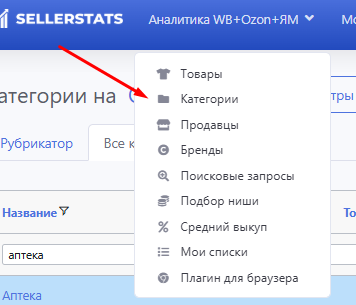
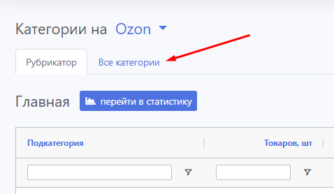
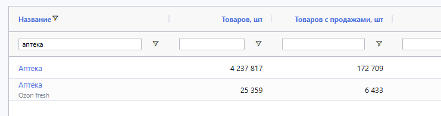
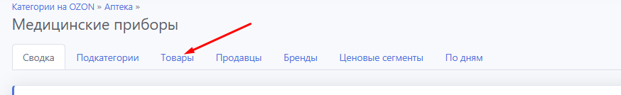
Сортировка, отбор, «Свой список»
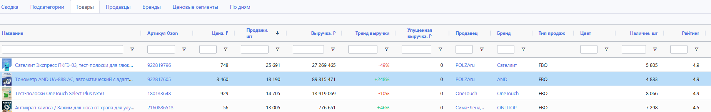
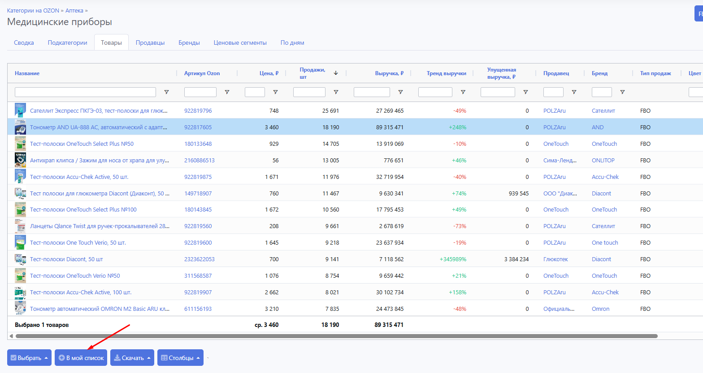
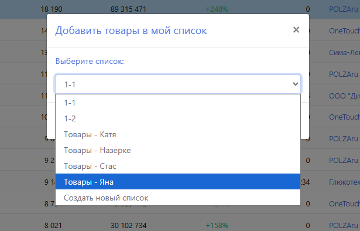
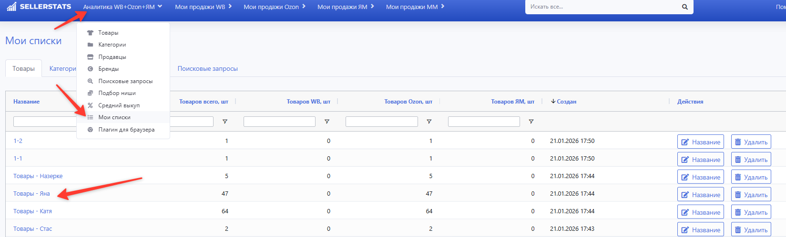
Что смотреть в сводке перед поиском поставщика
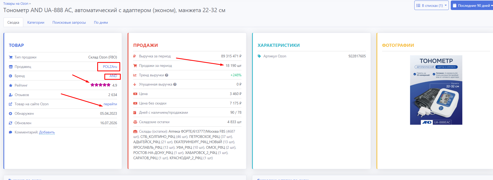
Приложение C. Утверждает руководитель
Заполняется один раз и обновляется при изменении политики:
| Параметр | Значение |
|---|---|
| Минимальная целевая маржа, % | ___________ |
| Ориентир рейтинга МП | ≥ 4.5 (или иное: _____) |
| SLA ответа по таблице новинок | _____ раб. дней |
| SLA повторного контакта с молчащим поставщиком | 3 раб. дня (или иное: _____) |
| Правило цены сайта Альмамед | ___________ |
| Правило цены МП | ___________ |
| Ссылка на единый реестр новинок | ___________ |
Приложение D. KeyCollector
Видеоинструкция: Google Drive
Ниже — «куда кликать». Бизнес-правила и антидубли — в блоке 6.
Категория и таблица фраз
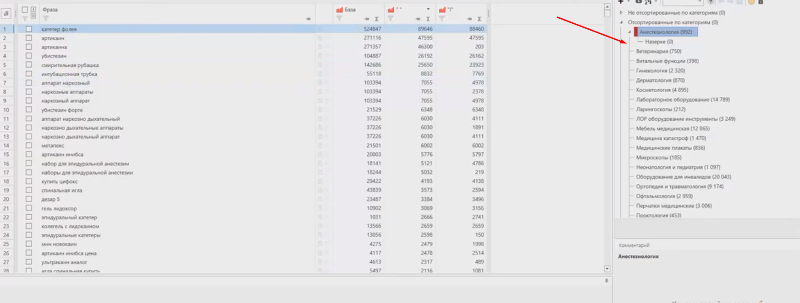
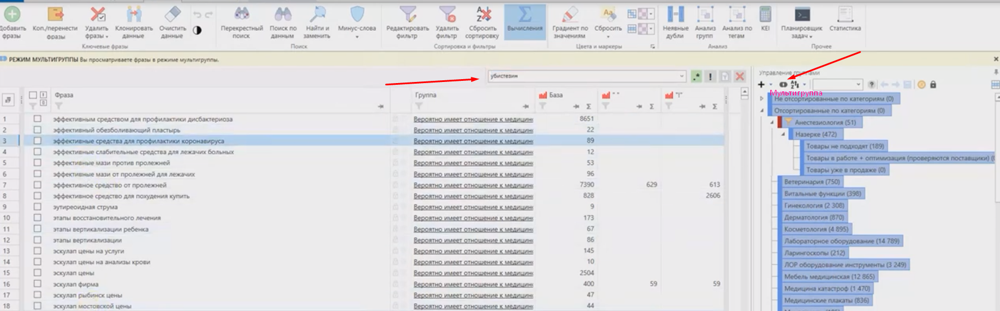
Три подгруппы и персональная папка
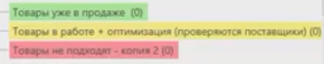
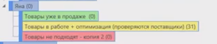
Приложение E. Датагон — Анализ поставщиков
Экран: /supplier-analysis.html
Ниже — «куда смотреть». Правила расширения — в блоке 7.
Как открыть раздел
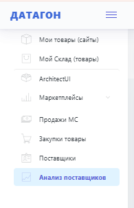
Топ по выручке и таблица метрик
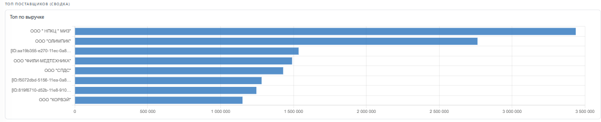
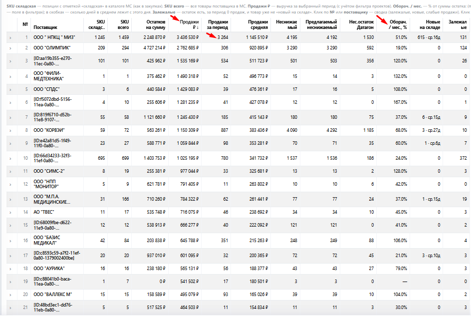
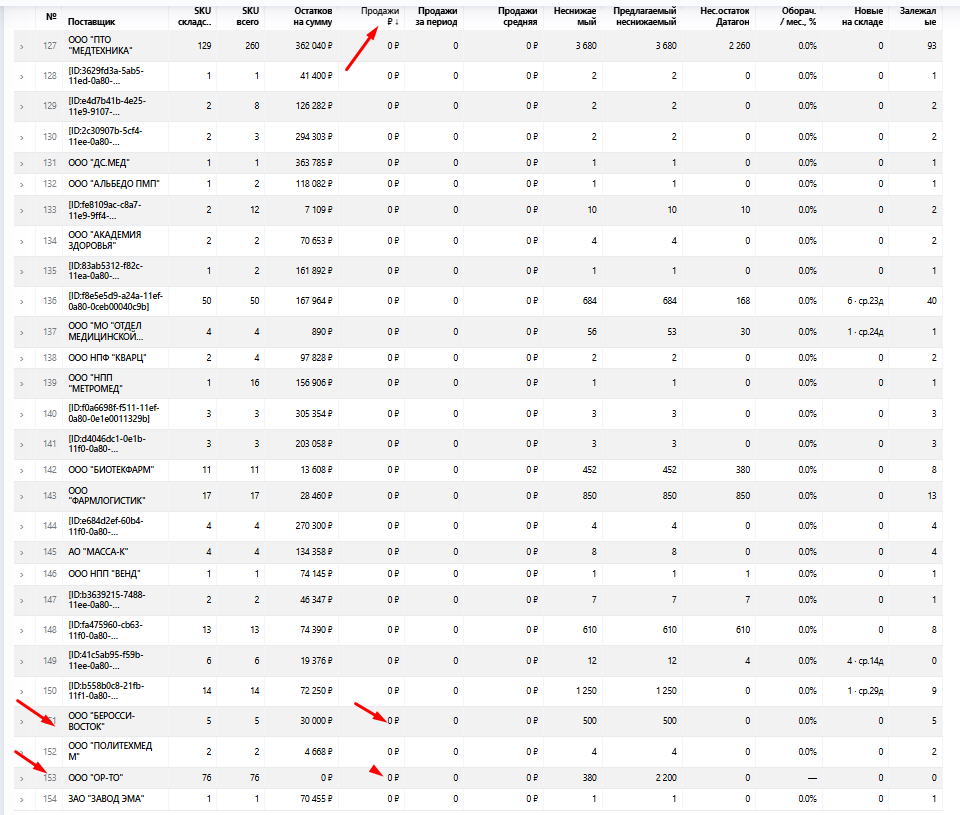